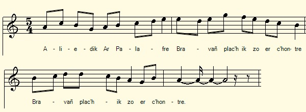

Son d'Aliedik Ar Palafre
Chanson pour Aliette Le Palafré
A Song for Aliette Le Palafré
Chant collecté par Théodore Hersart de La Villemarquédans le 2ème Carnet de Keransquer (p.110).

Mélodie
"Eskob Penanstank"
Arrangement Christian Souchon (c) 2012
Source: Air publié en 1913 dans "Musiques bretonnes" de M. Duhamel, n° 94, page 47
Chantés par Maryvonne Bouillonnec de Tréguier.
|
A propos de la mélodie Inconnue. Remplacée par un air publié en 1913 dans "Musiques bretonnes" de M. Duhamel, n° 94, page 47. Il accompagne le chant noté par Luzel dans "Gwerzioù I", page 424, L'évêque de Penanstank. C'est la deuxième mélodie chantée par Maryvonne Bouillonnec de Tréguier. Dans la version de "Penanstank" recueillie par Mme de Saint-Prix l'héroïne porte le même prénom que dans le présent chant "Aliette". A propos du texte Luzel a publié dans ses "Sonioù" (chants optimistes et légers) la version complète de ce chant dont La Villemarqué n'a noté que le premier quatrain, le sujet est assez proche de celui d'un autre chant "Brevelay" collecté par La Villemarqué dans le carnet N°1, pp. 124 et 125. A propos du chanteur La Villemarqué donne du chanteur la description suivante: "Chanté par Krez, (ou Ambroise) Guiomar, cheveux noirs ras, teint brun [il] louche; front large, face triangulaire - barbu-boiteux chauve diable - défenses, blanches quand il chante (+) (+) 47 ans . Veste de toile, cou nu, chemise ouverte, esprit, petite vérole." Le thème du chant Si La Villemarqué n'a noté que les 4 premiers vers de ce chant cest sans doute en raison de sa proximité avec Brevelay (dont les strophes 7, 11 et 17 correspondent aux strophes 18 à 20 du présent chant), un marivaudage où deux amoureux rivalisent de mensonges pour s'éblouir l'un l'autre. Ici, pourtant, seul le noble prétendant se vante d'une fortune chimérique, lui qui n'a qu'un seul domestique et un cheval famélique, auprès de la jeune fille, qui faisait courir la rumeur qu'elle était mariée. Aliette quant à elle, n'a qu'un frère clerc à mettre en balance avec ces mirifiques richesses, lequel punirait cruellement l'écart de conduite envisagé à la strophe 2 par son aristocratique soupirant, à savoir le concubinat. Elle s'inquiète en outre de la réaction de la famille du jeune homme, s'il épouse une roturière dont, assure-t-elle, il adoptera la condition. Elle finit néanmoins par l'agréer comme fiancé et comme mari. Les chants de ce type illustrent l'osmose qui s'opère entre deux classes sociales, bien avant la révolution: la petite noblesse désargentée et les paysans propriétaires enrichis qui recherchent une reconnaissance sociale en rapport avec leur fortune. Classification Malrieu Ce n'est pourtant pas ce thème social qui est mis en exergue dans la classification de Patrick Malrieu: Référence : M-00909 Titre critique breton : Gwelloch karantez eget madoù Titre critique français : Plutôt lamour que les biens Titre critique anglais : Rather have love than goods Thèmes : Demandes en mariage acceptées, organisées ; Lamour vainqueur malgré les oppositions diverses. 1 version connue jusque 2020: Collecteur : Luzel François-Marie. Interprète : Le Bouill Caroline. Date de collecte : Avant 1890. Lieu de collecte : Duault (Duaod, 22). "Aliettik ar Palefrer" dans "Manuscrits de Luzel (François-Marie)", Manuscrits ms 1020 à 1038, Ms 1020 - Cahier 6, p. 65-67 [f° 126 r - 127 r] et dans "Soniou Breiz-Izel", 1874-1890, Tome I, p. 226-229. |
About the tune Unknown. Replaced by an air published in 1913 in "Musiques bretonnes" by M. Duhamel, n ° 94, page 47. It accompanies the song noted by Luzel in "Gwerzioù I", page 424, The Bishop of Penanstank. It is the second melody sung by Maryvonne Bouillonnec de Tréguier. In the version of "Penanstank" collected by Mme de Saint-Prix the heroine has the same first name as in this song "Aliette". About the lyrics Luzel published in his "Sonioù" (optimistic and light songs) the full version of this song of which La Villemarqué only noted the first quatrain. The subject is quite close to that of another song, "Brevelay", collected by La Villemarqué in notebook N ° 1, pp. 124 and 125. About the singer The Villemarque gives the following description of the singer: "Sung by Krez, (or Ambroise) Guiomar, short black hair, brown complexion - [he has] a squint; a broad forehead, a triangular face. a beard. [He is] lame - bald - [resembles] a devil - discloses white tusks, when he sings (+) is 47 years old. [Wears a] canvas jacket with bare neck and open shirt, is witty. Scars of small pox." The theme of the song If La Villemarqué only noted the first 4 lines of this song, it is probably due to its proximity to Brevelay (whose stanzas 7, 11 and 17 correspond to stanzas 18 to 20 of this song), a marivaudage where two lovers compete in lies to dazzle each other. Here, however, only the noble pretender boasts of a chimerical fortune, though he has only one servant and a starving horse, when woing the girl, who spread the rumour that she is married. Aliette, on the other hand, has only one priest brother to balance out these magnificent riches: he would cruelly punish the misconduct envisaged in stanza 2 by her aristocratic suitor, namely concubinate. She is also worried about the reaction of the young man's family, if he marries a commoner, whose condition he will have to adopt, so says she. However, she ends up accepting him as her fiancé and as her husband. Songs of this type illustrate the osmosis that takes place between two social classes, long before the revolution: the penniless gentry and the wealthy peasant landownerss who sought social acknowledgment abreast of their wealthy conditions. Malrieu classification It is however not this social theme which is highlighted in the classification of Patrick Malrieu: Reference: M-00909 Breton critical title: Gwelloch karantez eget madoù French critical title: Rather love than goods English critical title: Rather have love than goods Themes: Accepted, organized marriage proposals; Love wins despite various oppositions. 1 version known until 2020: Collector: Luzel François-Marie. Performer: Le Bouill Caroline. Collection date: Before 1890. Collection location: Duault (Duaod, 22). "Aliettik ar Palefrer" in "Manuscrits de Luzel (François-Marie)", Manuscrits ms 1020 to 1038, Ms 1020 - Book 6, p. 65-67 [f ° 126 r - 127 r] and in "Soniou Breiz-Izel", 1874-1890, Tome I, p. 226-229. |
|
BREZHONEG (Stumm KLT) D'ALIEDIK AR PALAFRE Page 110 1. D' Aliedig ar Palafre, Bravañ plachig zo er chontre ! 2. Ma vin-me ganti o kousket, Me vo gant ma muiañ-karet. ... 3. Ma cheginer, ma faotr a di, Kerzh evidon betek enni, 4. Ha lavar dezhi, mar nhen goar, Eo plach karet war an douar. 5. Debonjour deoch-chwi, Alied. Ha deoch, keginer, p och deuet; 6. Me zeu da zigas deoch lizher Digant Bernez, ho servijer. 7. Trugarez evit ho lizher: Debrit boued hag it-chwi dar ger ; 8. Debrit-chwi boued, ha retornit Laret dho mestr on dimezet.. . 9. Debonjour deoch, ma mestr aotrou, Din-me a zo cheñchet keloù ; 10. Din-me a zo keloù cheñchet: Aliedig zo dimezet. 11. Ma cheginer, ma faotr a di, Kerzh evidon dar marchosi, 12. Ha dibr-te din ma inkane, Ma ch in da chout ar wirionez. 13. Debonjour deoch-chwi, Alied. Ha deoch-chwi, Bernez, poch deuet, 14. Keloù nevez, am euz klevet, Krediñ ve gwir nam-eus ket graet. 15. Ar cheloù challfe bezañ gwir ; An holl no-deus ket o dezir, 16. Ha me am-eus ur breur kloareg, Mar klevfe-se, a ven lazhet ! 17. Lez't ho preur kloareg denjentil, Ha pa ve gantañ kleze dir; 18. Ha pa ve gantañ kleze dir, Deus ur skoed en-deus, mem-eus mil; 19. Mem-eus un ti e Landreger, Tri-chwech milin war ur rivier, 20. Ha tri-chwech milin war ur stank, Hag a val holl gant neud archant. 21. Ar prenestoù en aour melen, An norioù en archant gwenn. 22. Pemp mil skoed ar bloaz a leve Neo ket an holl d-eus anezhe. 23. Holl a vezont deoch, Alied, Mar karit dont dam chemeret. 24. Aotrou, ho tad rayo marvailh, Welet e vab o paëañ tailh, 25. Stouet barzh an iliz, izel, Ha chwi savet a wad uhel. 26. Aotrou, diskennit, deu't en ti, Lakait ho march er marchosi ; 27. Lakait ho march er marchosi, Roit foenn ha kerch d(ezh)añ da zebriñ. 28. Tapit ho torn barzh ma hini, Ma ch eomp hon-daou da zimeziñ; 29. Ma ch eomp hon-daou da zimeziñ, Ha goude-se, da eurediñ. KLT gant Christian Souchon (c) 2020 |
FRANCAIS A ALIETTE LE PALAFRE Page 110 1. Qu'Aliette Le Palafré, Que nulle n'égale en beauté 2. Entre mes bras un jour repose: Puis-je donc souhaiter autre chose? 3. Mon factotum et cuisinier, A son huis va-t'en donc cogner, 4. Qu'elle sache, la belle blonde Qu'elle est mon seul amour au monde. 5. Bonjour à vous, blonde Aliette. Bonjour à vous, le cuisinier. 6. Je viens vous porter une lettre, De votre soupirant, Bernez. 7. Tout ce chemin! Merci, vraiment. Prenez un rafraîchissement; 8. Votre maître ignore je crois Que je suis mariée déjà... . 9. Monsieur j'apporte des nouvelles... Vous n'en attendiez point de telles; 10. Une nouvelle redoutée: Votre Aliette est mariée! 11. Mon cuisinier et majordome Cours à lécurie, je te somme 12. De seller mon fier destrier. Je veux en avoir le coeur net. 13. Bonjour, Aliette, ma belle. Bonjour à vous seigneur Bernez. 14. On m'apprend d'étranges nouvelles. Je ne crois pas qu'on dise vrai. 15. Est-ce là si bizarre chose? L'homme propose et Dieu dispose. 16. Mon frère est clerc, Sachez-le bien Je faute, il me tue. C'est certain! 17. Ce n'est pas lui qui m'impressionne, Eût-il l'épée d'un gentilhomme. 18. Car, pour un écu quil a, moi, Jen ai mille, tout clerc qu'il soit: 19. A Tréguier, ma gentilhommière, Dix-huit moulins sur la rivière ; 20. Et dix-huit moulins sur l'étang Aux meules à courroies dargent. 21. En or jaune sont les croisées, D'argent blanc les portes d'entrée; 22. Cinq mille écus de rente l'an. Qui donc pourrait en dire autant? 23. Et tout cela vous appartient Si vous liez votre sort au mien. 24. Moi, j'entends un père qui braille: Voyant son fils payer la taille, 25. Au fond de léglise s'asseoir Et sa noble race déchoir... 26. Descendez, mettez je vous prie, Votre cheval à lécurie ! 27. Le pauvre, il a bien mérité, Foin et avoine à volonté! 28. Placez votre main dans la mienne: Nous voilà tous deux fiancés! 29. Promis l'un à l'autre: que vienne Le jour où nous serons mariés! Traduction Christian Souchon (c) 2020 |
ENGLISH A SONG TO ALIETTE LE PALAFRE Page 110 1. Aliette Le Palafré, The fairest girl in this country, 2. If you want me to sleep with you, You'll make my dearest dream come true. 3. - My cook and busy one-man staff Go speak to her on my behalf, 4. And tell her, if she doesn't know, That for her my heart is aglow. 5. - A good day to you, Aliette. - It's a long time since we last met. 6. - I've come to bring you a letter, From Bernez, your zealous suitor. 7. - Thank you for walking all that way Have some food for the back journey; 8. Have some food, go back unhurried Tell your master that I'm married .. . 9. - Good day to you, my lord - he said I bring bad news, I am afraid. 10. I bring bad news. You'll be worried: Know that Aliette is married! 11. - My cook and ostler all-in-one Now to the stable you must run, 12. Saddle my palfrey, be so kind! I must be clear in my own mind. 13. - Good day to you, Aliette, I say. - Since you've come, Bernez, a good day! 14. - I heard surprising news of you Which I believe cannot be true. 15. - True or not true, like one chooses; Man proposes, God disposes. 16. My brother happens priest to be; If I obeyed you, he'd kill me. 17. - Your priest brother could be a knight, Wear a sword of steel as he might, 18. I wouldn't care, for I could spend For each crown he has, a thousand. 19. I have a house in Tréguier, And eighteen mills on a river; 20. I have eighteen mills on a pond, With silver belt wheels spinning round. 21. Whose windows are of yellow gold, The rest of silver, as I told! 22. Five thousand crowns yearly income: That much does not have everyone. 23. All this will be yours, all your life, If you agree to be my wife. 24. - Your father will be in a rage When he sees you paying tallage, 25. Down in the church, far down kneeling, Though such a high race's offspring. 26. Sir, dismount, and enter the house, Put in a stal this horse of yours; 27. Put into our stabble this horse, We'll give him hay fodder and oats. 28. Now come and give your hand in mine, That we're engaged, be it the sign; 29. As a sign that we got engaged, And our wedding will be arranged. |